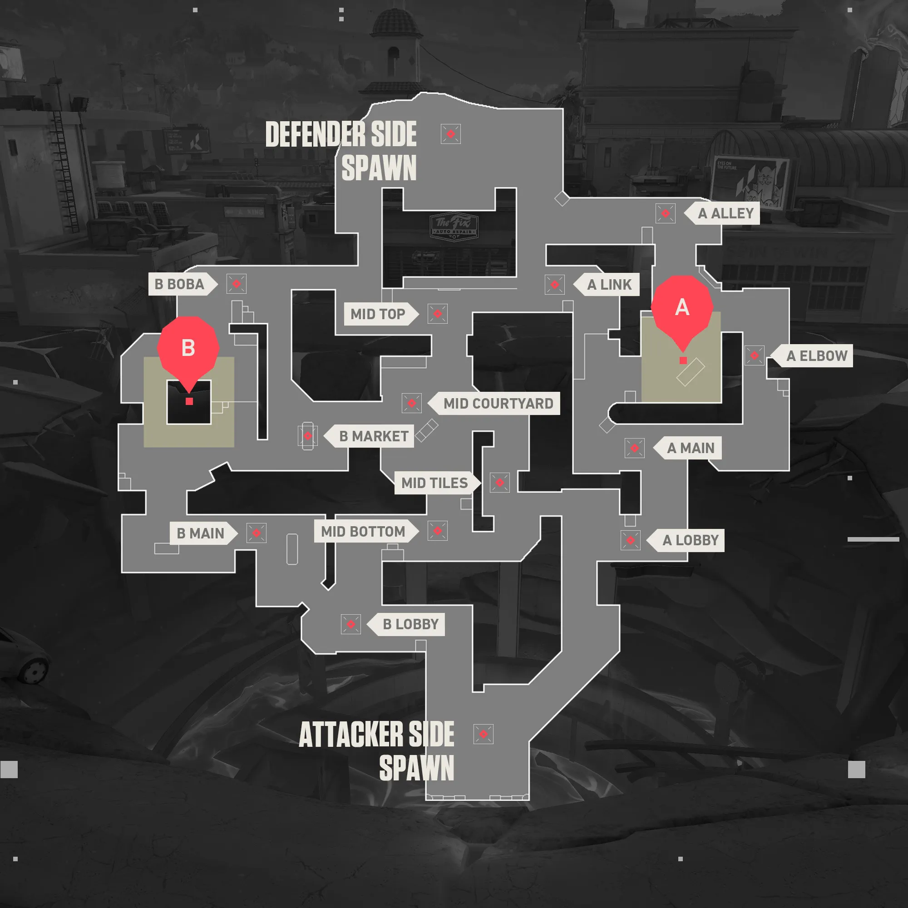

The Tactical World of Valorant
Valorant, for those lucky enough to not know yet, is a free-to-play first-person shooter from Riot Games. It has blown up within the gaming world since delivering, mixing strategic shooting and remarkable abilities agents. Valorant allows for the best of both worlds, catering to a multitude of playstyles whether you prefer stealthy or aggressive tendencies.Valorant, for those lucky enough to not know yet, is a free-to-play first-person shooter from Riot Games. It has blown up within the gaming world since delivering, mixing strategic shooting and remarkable abilities agents. Valorant allows for the best of both worlds, catering to a multitude of playstyles whether you prefer stealthy or aggressive tendencies.
One of the key elements of Valorant is teamwork. Players need to communicate and coordinate with their team to secure objectives and eliminate enemies. Each agent has their own unique set of abilities that can turn the tide of battle. It’s not just about shooting—strategy is key.

Valorant is a breathe of fresh air with new agents consistently being added and maps evolving. Without the constant work a mantra like balanced and maintaining competitive focus with new challenges, s well as associated content available to have fun wherever we can on the rift. Valorant remains an exhilarating experience whether you are a casual player or play it competitively.